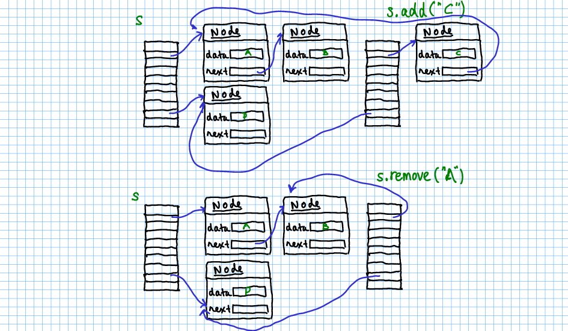

In this problem, you will implement an immutable set. The add and remove methods don't mutate the set but instead return a new set with the given element added or removed.
At first glance, that sounds horribly inefficient. But you can share a lot of structure between the two sets. And the sharing is safe because nothing is ever mutated. You'll be happy to know that there is never a reason to throw a ConcurrentModificationException!
Here is how you can share structure.
All buckets that don't contain the added or removed element can be shared.
When adding an element, you can share the entire old node sequence and just add the new node in front.
When removing an element, you need to make fresh copies of the nodes preceding the removed node, and you can share the nodes following it.
Finally, if an operation doesn't make any change, return the HashSet instance.
